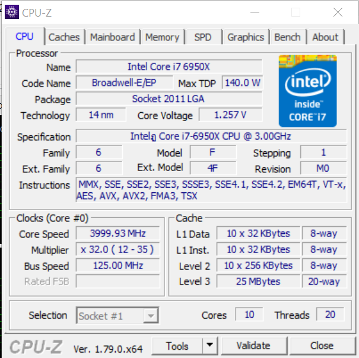
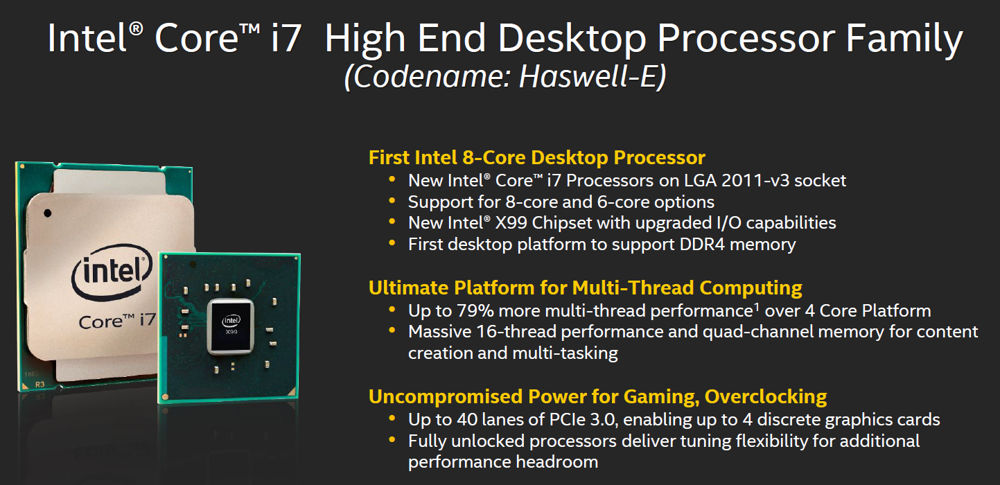

Intel® Core™ i7-6950X Processor Extreme Edition
วันนี้ผมจะทดสอบซีพียูในตระกูลคอร์ที่เรียกได้ว่ามีประสิทธิภาพสูงที่สุดในตอนนี้ และผมจะเป็นผู้ทดสอบด้วยตัวเอง
Intel® Core™ i7-6950X
Core i7-6950X เป็นเป็นซีพียูที่มีแกน 10 คอร์ และ 20 เธรด มีความเร็ว เบส คล็อก(base clock)ที่ 3.00 GHz และ 3.50 GHz บูส คล็อก(boost clock) และมาในรูปแบบปลดล็อคสามารถทำการโอเวอร์คล็อกได้ มีLevel3 Cache 25 MB(2.5 MB ต่อ/คอร์) และยังสามารถทำงานร่วมกับ ชิปเซต X99 ที่ใช้ socket LGA 2011-v3
แล้วผมจะใช้โปรแกรมอะไรในการทดสอบบ้างมาดูกันเลย ชมผลการทดสอบ
 จากผลการทดสอบจะเห็นได้ชัดว่าแคช เลเวล1(Cache Level1) มีความเร็วในการอ่านอยู่ที่ 2454.8 กิกะไบต์/วินาที มีความเร็วในการเขียนอยู่ที่ 1249.2 กิกะไบต์/วินาที และ มีความเร็วในการก๊อปปี้อยู่ที่ 2497 กิกะไบต์/วินาที ในขณะที่เมมโมรี่(Memory)หรือ แรม(RAM) มีความเร็วในการอ่านอยู่ที่ 69306 เมกกะไบต์/วินาที มีความเร็วในการเขียนอยู่ที่ 69254 เมกกะไบต์/วินาที และ มีความเร็วในการก๊อปปี้อยู่ที่ 70793 เมกกะไบต์/วินาที โดยเลเทนซี่ (Latency)ของทั้งหมดได้ออกมาแตกต่างกันอย่างเห็นได้ชัด แคช เลเวล1(Cache Level1) ใช้เวลาในการเข้าถึงข้อมูลเพียงแค่ 1 นาโนวิเท่านั้น
จากผลการทดสอบจะเห็นได้ชัดว่าแคช เลเวล1(Cache Level1) มีความเร็วในการอ่านอยู่ที่ 2454.8 กิกะไบต์/วินาที มีความเร็วในการเขียนอยู่ที่ 1249.2 กิกะไบต์/วินาที และ มีความเร็วในการก๊อปปี้อยู่ที่ 2497 กิกะไบต์/วินาที ในขณะที่เมมโมรี่(Memory)หรือ แรม(RAM) มีความเร็วในการอ่านอยู่ที่ 69306 เมกกะไบต์/วินาที มีความเร็วในการเขียนอยู่ที่ 69254 เมกกะไบต์/วินาที และ มีความเร็วในการก๊อปปี้อยู่ที่ 70793 เมกกะไบต์/วินาที โดยเลเทนซี่ (Latency)ของทั้งหมดได้ออกมาแตกต่างกันอย่างเห็นได้ชัด แคช เลเวล1(Cache Level1) ใช้เวลาในการเข้าถึงข้อมูลเพียงแค่ 1 นาโนวิเท่านั้น